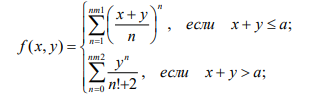

Чистяков Павел, гр. 9413. Вариант 2.
Табулирование функции:

Введите начальное значение X:
Введите конечное значение X:
Введите начальное значение Y:
Введите конечное значение Y:
Введите nm1:
Введите nm2:
Введите a:
Введите шаг: